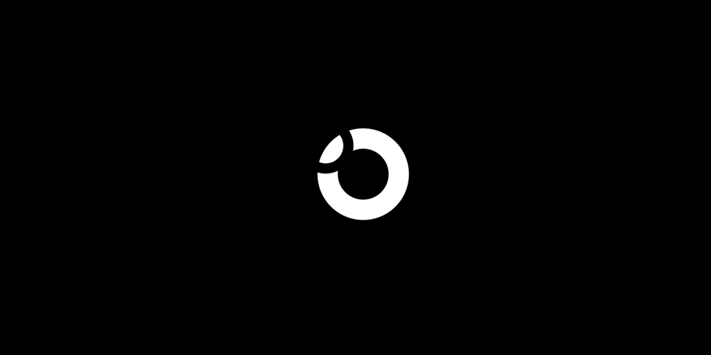

orbit
A heads-up display app that puts directions in a driver’s peripheral view, designed around the needs of neurodiverse drivers.
View case studyHello, I’m Ryan.
I’m a Product Designer (UX/UI) in Belfast, designing digital products that help people when it matters most, with accessibility at the core of the process.
A closer look at some of my work, each one shaped around the people who use it.

A heads-up display app that puts directions in a driver’s peripheral view, designed around the needs of neurodiverse drivers.
View case studyGreat design starts with understanding people.
I enjoy uncovering what people actually need, simplifying complex workflows, and turning ideas into digital experiences that are genuinely easy to use.
Over the past three years I’ve worked across a range of products, collaborating with product managers, developers and stakeholders to bring concepts to life. From research and journey mapping to high-fidelity interfaces and design systems, I aim for work that’s thoughtful, accessible and built to scale.
Start with peopleResearch comes before pixels, so every screen answers a real need.
Accessible by defaultWCAG from the first sketch, and tested with the people who rely on it.
Evidence over opinionTest, learn and iterate, letting what people actually do guide the design.
Tools I use every day
UX/UI Designer, Inclutech
Belfast. Owned the end-to-end design process across multiple digital products, ran usability testing and workshops, and helped build reusable components and patterns.
UX/UI Designer (placement), The Essence Vault
Randalstown. Designed e-commerce and marketing experiences, from user research and competitor analysis to high-fidelity UI in Figma.
BDes (Hons) Interaction Design, Ulster University
HND Graphic Design, Belfast Metropolitan College
“Paste a recommendation here, ideally from someone who saw your process up close, like a product manager or lead designer. Two or three sentences reads best at this size.”
“A second voice, perhaps an engineer, on what it’s like to build from your designs: clear handoff, thoughtful annotations, openness to constraints.”
“A third perspective rounds it out: a stakeholder, a research participant, or a lecturer from Ulster University.”